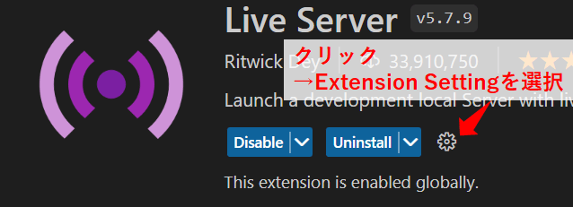

2023/05/02
VSCodeの拡張機能「Live Server」を使う
VSCodeでHTML/CSS/JavaScriptのプログラミングをする際には、拡張機能「Live Server」を導入すると便利です。
ワンクリックでローカルサーバの立ち上げ、ページの表示ができます。
相対パスで指定したimage、CSSなどもちゃんと反映してくれます。
また、ホットリロードにも対応しており、元ファイルを変更して保存すると、表示中のページもすぐに変更が反映されます。
Live Server - Visual Studio Marketplace
Extension for Visual Studio Code - Launch a development local Server with live reload feature for static & dynamic pages
使い方
まず、VSCodeで表示したいファイルのあるフォルダを開きます。
注）フォルダで開かないとLive Serverは動作しません。
ページの表示方法は何通りかあります。
ファイルをVSCodeで開いて、ALT+L ⇒ ALT+O
ファイルをVScodeで開いて、どこでもいいので画面で右クリックし、「Open with Live Server」を選択

- ファイルをVSCodeで開いて、右下のステータスバー上の「Go Live」をクリック

- 左のファイルリストから表示したいファイルを右クリックし、「Open with Live Server」を選択
設定
VSCode上の、拡張機能の画面で各種設定が可能です。
各設定の詳細は、github上に説明があります。
vscode-live-server/settings.md · ritwickdey/vscode-live-server
Launch a development local Server with live reload feature for static & dynamic pages.
全部で20項目あります。
ホストのアドレスやポート番号、デフォルトブラウザ等の設定ができます。
以上です。